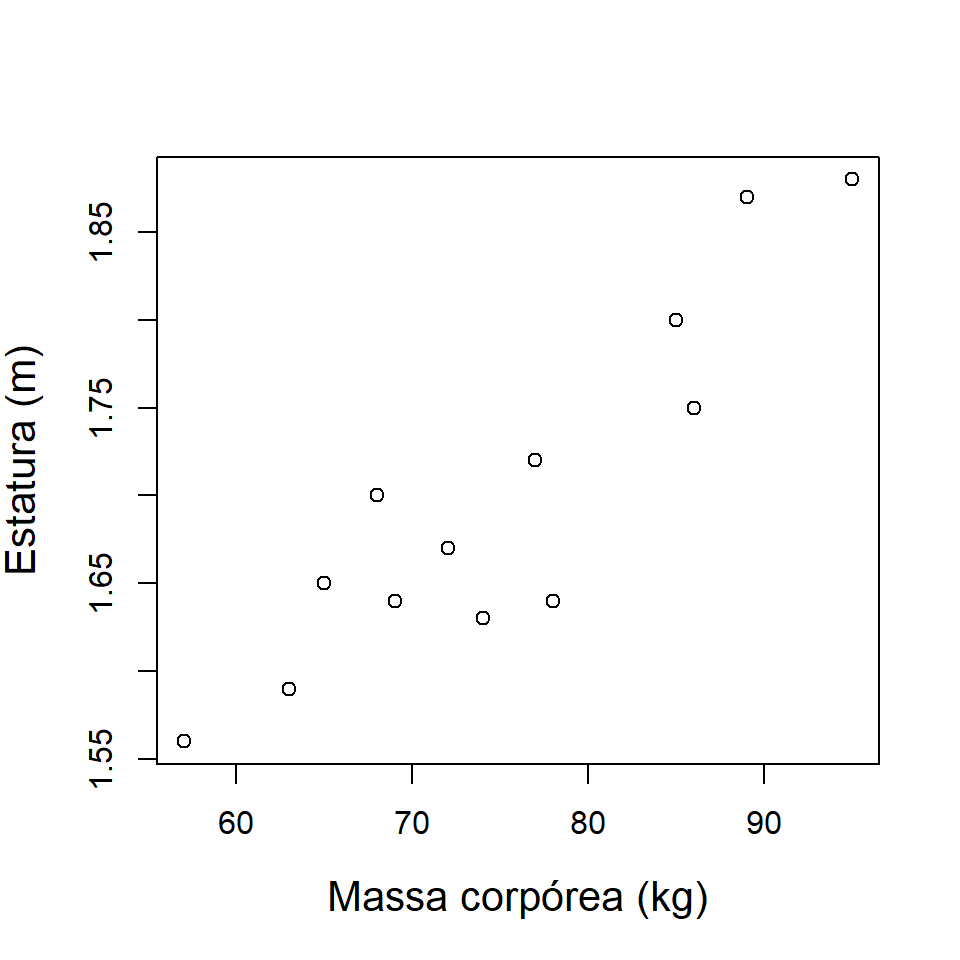

Análise de Regressão - uma introdução
24 de fevereiro de 2022
Chapter1 Exemplo : Estatura e Massa Corporal
- Dados de peso e altura
peso <- c( 78, 65, 57, 89, 74, 68, 77, 95, 86, 72, 63, 85, 69 )
altura <- c( 1.64, 1.65, 1.56, 1.87, 1.63, 1.70, 1.72,
1.88, 1.75, 1.67, 1.59, 1.80, 1.64)
df <- data.frame(peso, altura)
head(df)## peso altura
## 1 78 1.64
## 2 65 1.65
## 3 57 1.56
## 4 89 1.87
## 5 74 1.63
## 6 68 1.70- Diagrama de dispersão
plot(peso, altura, xlab = "Massa corpórea (kg)", ylab = "Estatura (m)",
cex.lab=1.3)
Questões:
A relação é aproximadamente linear?
A relação é positiva ou negativa?
A relação é forte ou fraca?
Existem outliers?